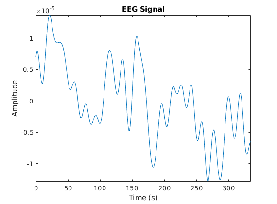
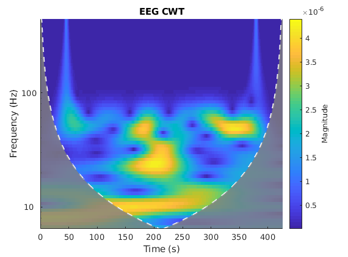
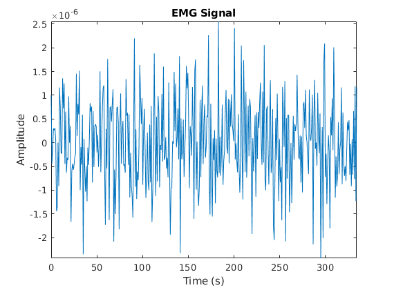
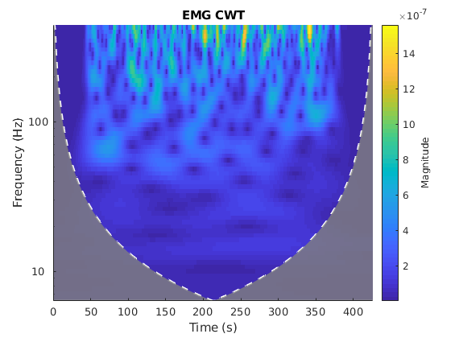
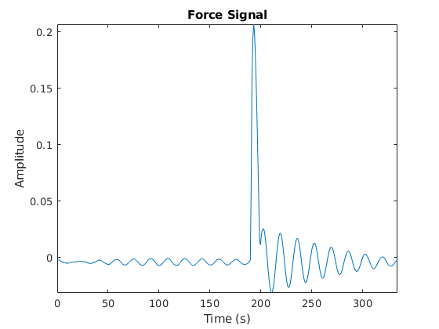
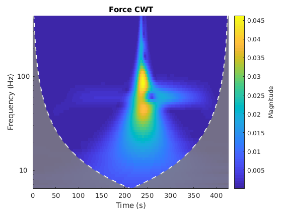

load('YZ1200Hz.mat')
Fs = 1200;
eeg_signal = EEGSeg_Ch{1,1}{1,1}(1,:)-mean(EEGSeg_Ch{1,1}{1,1}(1,:));
emg_signal = EMGSeg_Ch{1,1}{1,1}(1,:)-mean(EMGSeg_Ch{1,1}{1,1}(1,:));
force_signal = ForceSeg_Ch{1,1}{1,1}(1,:)-mean(ForceSeg_Ch{1,1}{1,1}(1,:));
N_samples = length(eeg_signal);
n = (2^nextpow2(N_samples) - N_samples) / 2;
eeg_for_wavelet = [zeros(1,floor(n)), eeg_signal, zeros(1,ceil(n))];
emg_for_wavelet = [zeros(1,floor(n)), emg_signal, zeros(1,ceil(n))];
force_for_wavelet = [zeros(1,floor(n)), force_signal, zeros(1,ceil(n))];
time = N_samples / 1.2;
t = linspace(0, time, N_samples);
figure
plot(t,eeg_signal)
axis tight
title('EEG Signal')
xlabel('Time (s)')
ylabel('Amplitude')
snapnow
cwt(eeg_for_wavelet, 'amor', Fs)
shading flat
title('EEG CWT')
xlabel('Time (s)')
ylabel('Frequency (Hz)')
figure
plot(t,emg_signal)
axis tight
title('EMG Signal')
xlabel('Time (s)')
ylabel('Amplitude')
snapnow
cwt(emg_for_wavelet, 'amor', Fs)
axis tight
shading flat
title('EMG CWT')
xlabel('Time (s)')
ylabel('Frequency (Hz)')
figure
plot(t,force_signal)
axis tight
title('Force Signal')
xlabel('Time (s)')
ylabel('Amplitude')
snapnow
cwt(force_for_wavelet, 'amor', Fs)
axis tight
shading flat
title('Force CWT')
xlabel('Time (s)')
ylabel('Frequency (Hz)')
     